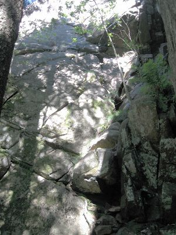
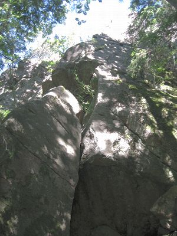
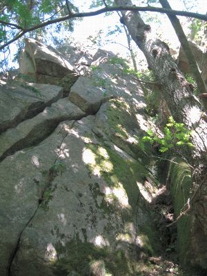

Välseröd
GPS: 58.48231,11.45600
Allmänt
Verkligt klassisk mark med höga väggar och kvalitetsleder i hela registret. Fantastisk badsjö några hundra meter bort.
Karaktär
Klassisk sprick och vägg-klättring. Välseröd inbefattas av Bohusläns Klätterklubbs bultpolicy om att hållas bultfria i framtiden.
Classic crack and face climbing. Välseröd follows the Bohusläns Klätterklubb's bolt policy on staying bolt free in the future.
Vägbeskrivning
Access
Leder
Parkeringsväggen
Villskuddväggen
Firningsankare ovanför Villskudd, det är drygt 30 meter ner men fungerar med ett intakt 60 m rep.
{|
|- valign="top"
| width=300px|
-
- En Bökig Historia Inne I Hörnet
- 6+
- Detta är en underskattad led. Tips! Efter kruxbulken klättrar du välsäkrat via tunna sprickor till starten på Torsketakets 2 replängd. Fortsätt denna (krämigt kilsäkrat dieder (grad 6) och du har en tvåstjärnig kalaskombination.
-
- Jungfrun
- 4
- Traversera vänster på den stora hyllan tvärs över väggen (luftig grad 2), stand runt hörnet. Sedan upp i den klockrena sprickan.
-
- Den Femte Ryttaren
- 7
- Knallfin led som för till ett syltunt men välsäkrat krux. Tyvärr är den felbultad vid det första taket. FA hade en förplacerad lååång slinga i den första bulten. Om du inte har med - och litar på - skyhooks, tvingas du göra ett 6+ flytt innan du kan klippa bulten (och riskerar ett frakturfall i rampen).
-
- Villskudd
- 6-
- En av Bohusläns finaste i sin grad. Hangla åt vänster tills du når fingersprickan. Gå rakt upp, fortsätt genom liten diederformation/flak. När sprickan tar slut, kliv ut åt vänster till nästa spricka. Följ denna med dragning åt höger till takets högra sida. Traversera vänster under taket, sedan upp till hyllan. Fortsätt ända till toppen för att få ut max av leden. Några långa slingor hjälper mot repdrag.
-
- Rödsurt
- 7-
- Alternativt utsteg till ''Vildvin''. Klättra sömen rätt upp till firningsankaret.
Slimlineväggen
-
- Rektum Dei a.k.a Världens Svåraste 4+
- 6-
-
-
- Feta Linjen
- 8- R
- Som Slimline de första 15 m upp till ett horisontellt riss som hanglas till areten till höger. Upp areten ett par meter, så ut på sva till höger. Följ detta till toppen. Leden börjar med ett tak, fortsätter med en fingerspricka, en hangel, en arete och till sist ett psykande sva långt från den sista säkringen. Den här krämleden får med sig det mesta av det bästa på en av Sveriges finaste formationer.
Stora Väggen
-
- Gör Stor Större
- 6+
- Det jämnare och finare avlutet på Stora väggen. Efter stand på Stora väggen klättra upp lite, traversera höger, och följ den naturliga linjen rakt upp. En bult saknas (sept 2010), något run-out.
-
- Stora väggen
- 7-
- Välsäkrad och fin om man har gott om grejer. Första replängden är 7-, stand vid busken. Andra replängden är smutsig och igenväxt (5+), och för den kompetenta sjuminusklättraren rekommenderas Gör Stor Större som ett finare avslut.
-
- Kameleonten
- 7+ R
- Börja direkt ovanför det stora överhänget längst ned i sprickan några meter till vänster om Uppskjuten Start. Följ denna spricka tills den börjar gå ihop med Uppskjuten Start och gå sedan vänster mot bågformad spricka. Följ den bågformade sprickan upp till hylla. Traversera vänster längsmed hyllan till möjlig standplats. Fortsätt uppåt i det lilla diedret mellan Stora väggen och Gör Stor Större och avsluta med känslig väggklättring rakt upp till utsteget. Mycket mångfacetterad och jämn klättring utan nämnvärda transportsträckor.
-
- Direktinsteg - Uppskjuten Start
-
-
Umuliusväggen
-
- Birgers Borst Direkt
- 7
- Direktinsteg till Birgers borst. Startar direkt till vänster om originaldiedret. Följer en kant och några sidotag. Ansluter till Birgers borst halvvägs upp.
-
- Birgers Borst
- 6+
- Mycket delikat men mycket välsäkrat krux.
-
- Till Slut
- 8-
- Några meter till höger om Celesta. Börjar i ett överhäng, upp till en pricka. Följ denna över ytterligre ett mindre överhäng, sedan fin slott-klättring till ett bitande boulderkrux som avslutas på en svahylla. Efter hyllan fin ihållande tvärbandsklättring till en avslutande spricka som leder dig till topps.
Kaminväggen
-
- Jungeltunnel
- 4+
- Går i kaminen i hörnet mellan ''Ett Barn Av Glas'' och ''Glöm Inte Det Gröna Fodralet''. Över kaminen vid hyllan, följ spricka på vänsterväggen upp till toppen. Går att säkra med normalt rack. Orensad men det går ändå.
-
- Glöm Inte Det Gröna Fodralet
- 6-
-
-
- Järnkaminen
- 5
- Kalasled i sin grad. Äkta klassisk kaminklättring följs av fin fingerspricka.
100-Dagar-Väggen
-
- 100 Dagar
- 6-
- Ihållande, teknisk och fin fingerspricka.
-
- David och Goliat
- 5-
- Omväxlande stora sprickor och bra lister till vänster om Pontus arête. Välsäkrad start men runout på mitten. Avslutar i det flacka diedret från hyllan till toppen.

-
- Pontus arête
- 6
- Börja längs arêten på blocket för att fortsätta på arêten på väggen. Svårsäkrad.

-
- Pontus styvbror
- 5-
- Väggklättring till höger om Pontus arête precis till vänster om det stora diedret. Utsteg precis till höger om arêten.

Övre Väggen
-
- Skit Inte I Mitt Kylskåp
- 6+
-
Ying-Yang Väggen
Skogsväggen
Badklippan
Kategori:Bohuslän
Kategori:trad
Kategori:sva
Kategori:vertikalt
Kategori:access
Copyright (C) Permission is granted to copy, distribute and/or modify this document under the terms of the GNU Free Documentation License, Version 1.3